藏经资源
藏经一百十六部，自本体至部署，凡十一门：本体八，传感八，遥操九，数据十一，仿真十六，中间八，算法十六，训练八，部署八，评测十三，学课十一。每部注三事：何以用之，何以勿用，费时几何。
本体硬件
8机械臂、灵巧手与移动、人形平台先有其器。结构、关节与自由度，划下此后一切数据的边界。
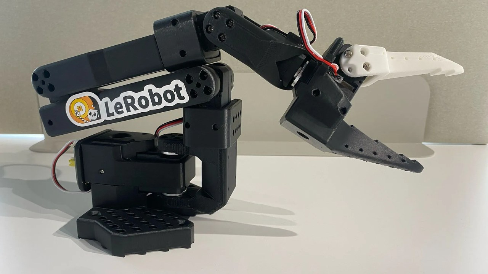
SO-ARM1008.1k★
The Robot Studio 开源的 6 自由度舵机臂，BOM 用 3D 打印件加桌面级舵机。
TheRobotStudio · Apache-2.0 · C++ / STL
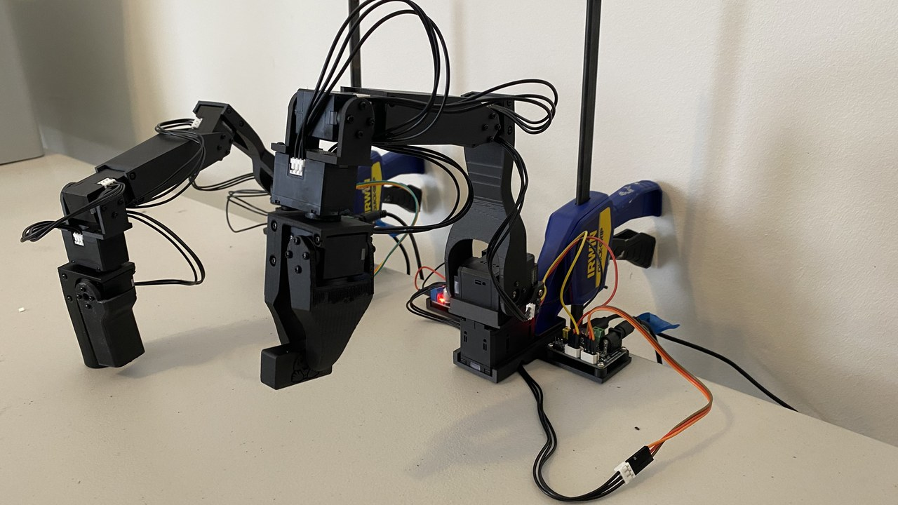
Koch v1.1737★
Koch 低成本臂的 1.1 版装配与标定说明，配 Dynamixel 舵机与 3D 打印件。
Alexander Koch / jess-moss · Apache-2.0 · Python
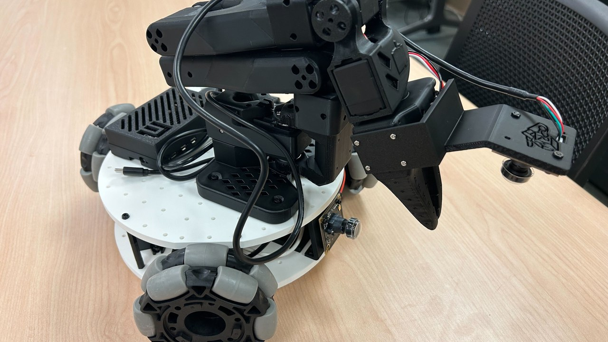
LeKiwi1.5k★
把 SO-100 臂装到全向轮底盘上的低成本移动操作平台，含遥操作与 LeRobot 接入。
SIGRobotics-UIUC · Apache-2.0 · Python
XLeRobot5.8k★
约 660 美元的双臂移动家用机器人方案，含 BOM、装配、遥操作与 LeRobot 数据接口。
Vector Wang · Apache-2.0 · Python
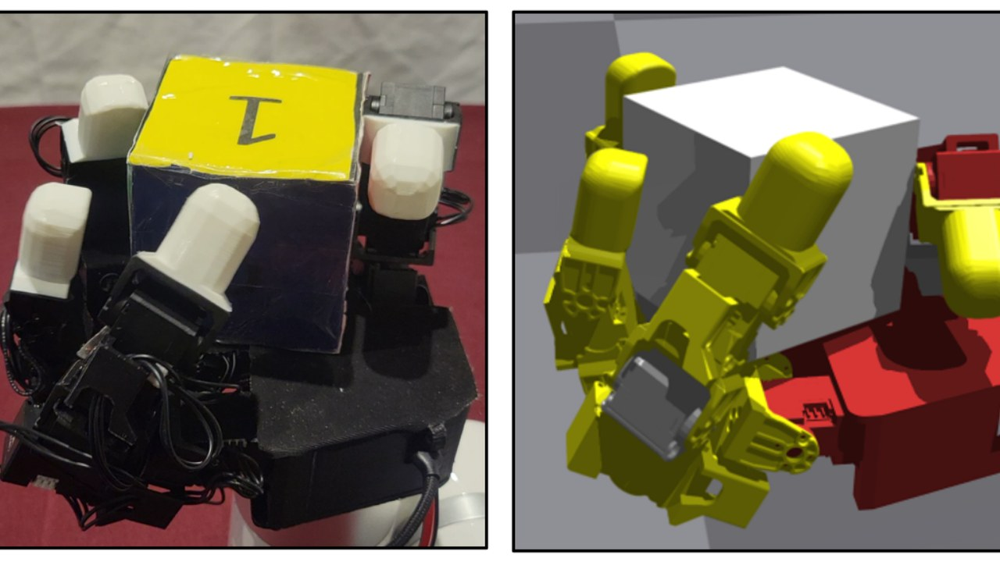
LEAP Hand215★
CMU 开源的 16 自由度灵巧手，附 Isaac Gym 仿真环境与实机控制接口。
Kenny Shaw / CMU · MIT（仿真仓库）/ CC BY-NC 4.0（API 仓库） · Python / C++
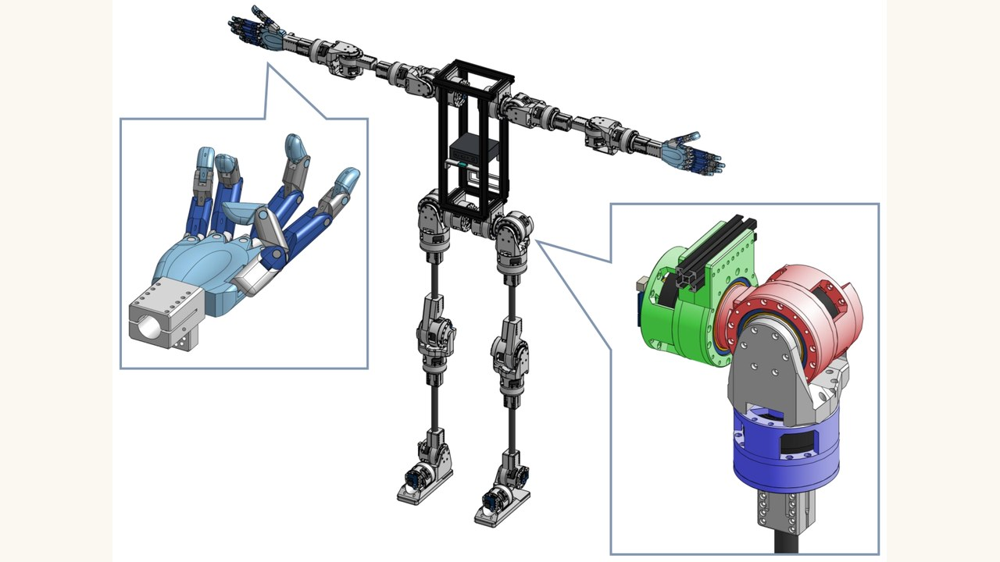
Berkeley Humanoid Lite2.0k★
伯克利开源的 3D 打印人形，含摆线针轮执行器设计、嵌入式代码与 RL 部署流程。
UC Berkeley Hybrid Robotics · MIT · Python / C++
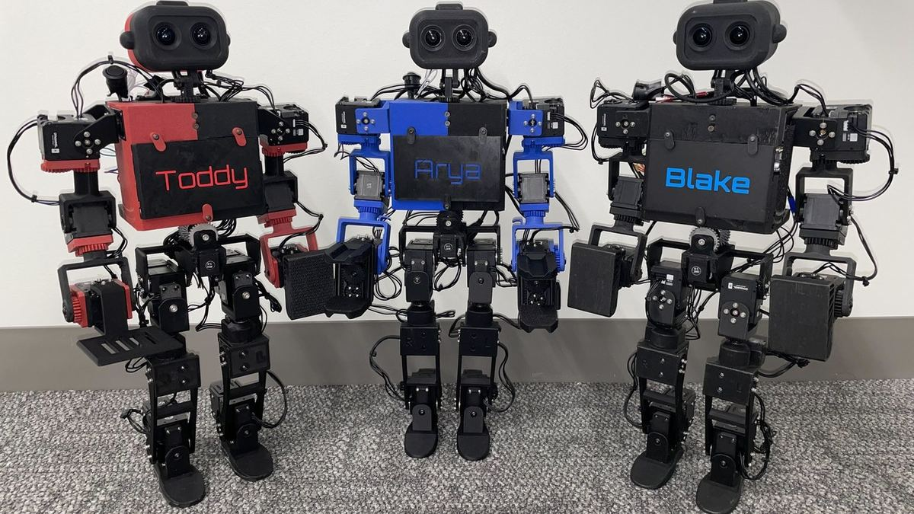
ToddlerBot804★
斯坦福开源的 3D 打印小型人形，含硬件图纸、仿真资产与强化学习训练脚本。
Stanford / hshi74 · MIT · Python
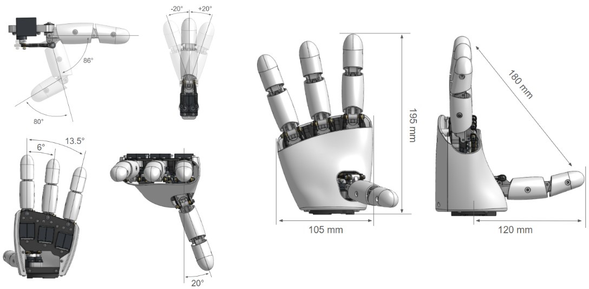
AmazingHand2.5k★
Pollen Robotics 开源的 8 自由度灵巧手，含结构件、控制代码与抓取示例。
Pollen Robotics · Apache-2.0 · Python
传感
8深度相机、视触觉与标定器能见几分、触几分，数据里便有几分可学。
librealsense9.1k★
RealSense 深度相机的官方 SDK，提供驱动、对齐、内参读取与多机同步。
RealSense（原 Intel RealSense） · Apache-2.0 · C++ / Python
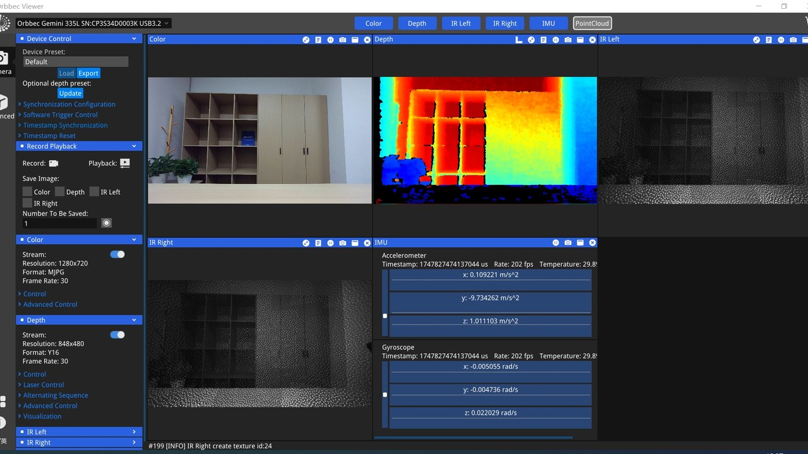
Orbbec SDK v2271★
奥比中光深度相机的官方 SDK，覆盖 Femto 与 Gemini 系列的取流、对齐与内参。
Orbbec · MIT · C++ / Python
ZED SDK1.2k★
Stereolabs 双目相机的官方示例与接口，提供深度、位姿跟踪与人体骨骼。
Stereolabs · MIT（仓库）/ SDK 另有许可 · C++ / Python
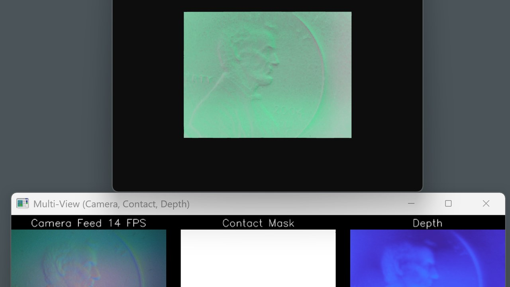
GelSight SDK206★
GelSight 视触觉传感器的官方 SDK，负责取图、标定与接触图像处理。
GelSight · GPL-3.0 · Python
DIGIT94★
Meta 开源的视触觉传感器 DIGIT，公开硬件设计与取图接口。
Meta AI · CC BY-NC 4.0 · Python
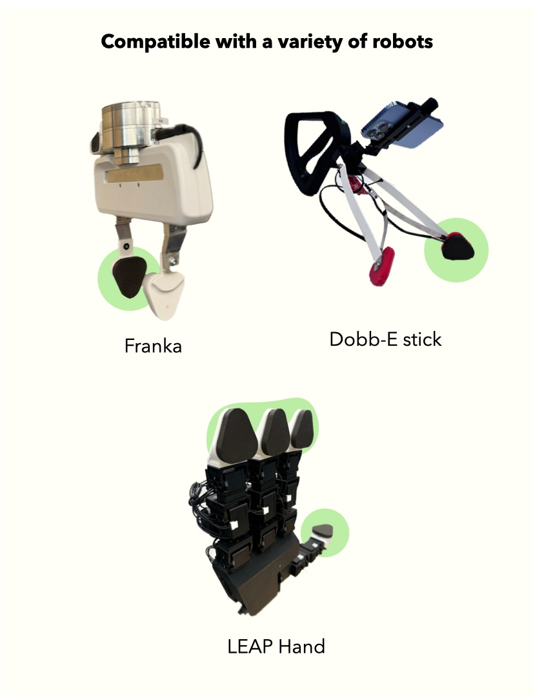
AnySkin91★
可快速更换磁性皮肤的触觉传感方案，附读数接口与标定流程。
RAIL / NYU · MIT · Python
Kalibr5.8k★
多相机与视觉惯性系统的标定工具箱，输出相机内外参与时间偏移。
ETH Zurich ASL · BSD-3-Clause（LICENSE 原文，GitHub 分类为 Other） · C++ / Python
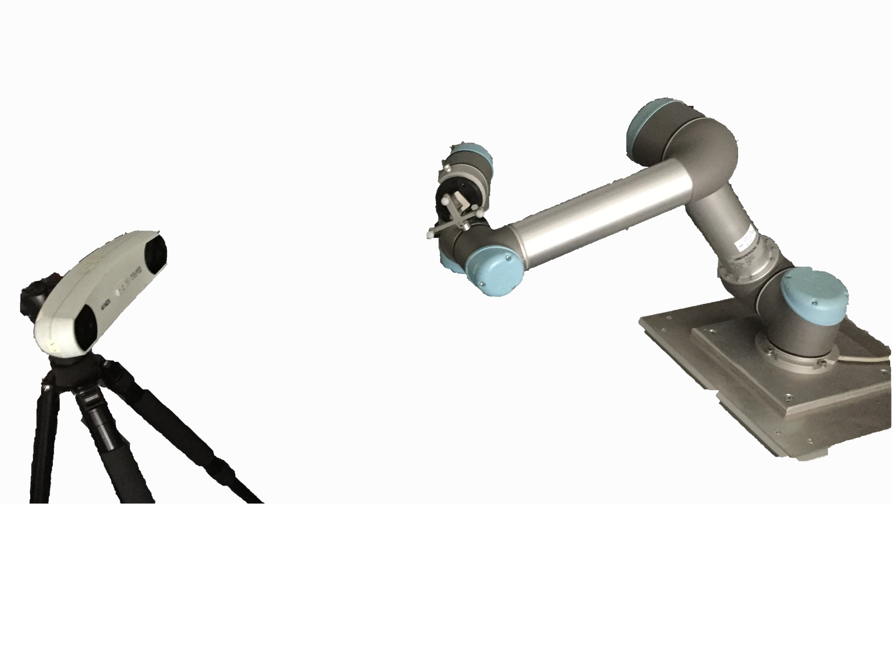
easy_handeye2328★
ROS 2 的手眼标定工具，采多组位姿后解出相机与末端的变换。
Marco Esposito · LGPL-3.0 · Python
遥操作与采集
9把人的动作变成轨迹人先演一遍，器把动作录成带时间戳的轨迹。
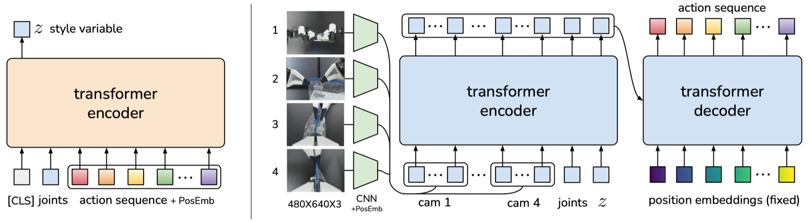
ALOHA2.4k★
低成本双臂遥操作与 ACT 模仿学习。
Tony Zhao et al. · MIT（以仓库为准） · Python
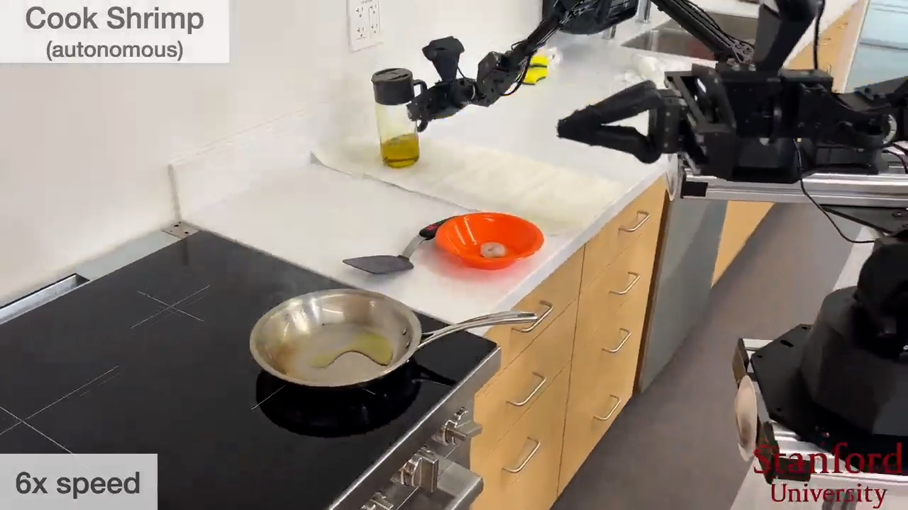
Mobile ALOHA4.5k★
给 ALOHA 装上移动底盘，可做炒虾、开柜、进电梯等全身任务。
MarkFzp et al. · 无 LICENSE 声明 · Python
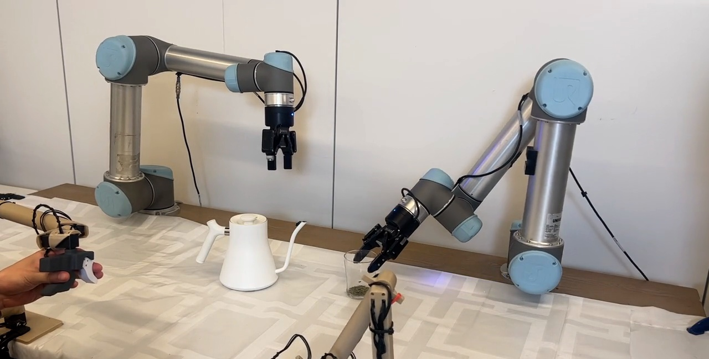
GELLO564★
用 3D 打印关节臂做低成本遥操作，按目标机械臂的关节数定制。
Philipp Wu / UC Berkeley · MIT · Python
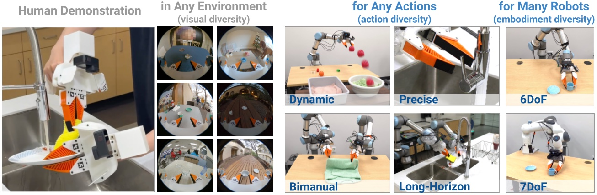
UMI1.6k★
用手持夹爪在真实场景采数据，再把轨迹迁到机器人上执行的采集方案。
Stanford / Columbia · MIT · Python
DexCap427★
用便携动捕手套采集灵巧手操作数据的方案，附重定向与策略学习代码。
Stanford / j96w · MIT · Python
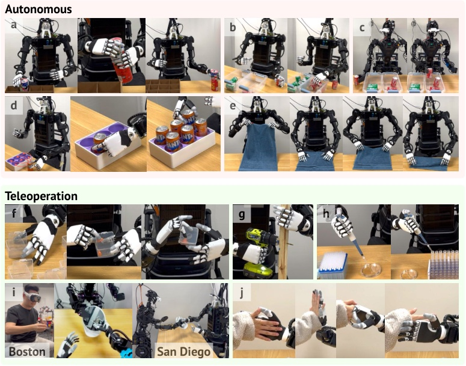
Open-TeleVision1.3k★
用 VR 头显做立体视觉遥操作的开源实现，含机器人端与头显端代码。
UC San Diego / MIT（Cheng 等） · Apache-2.0 · Python
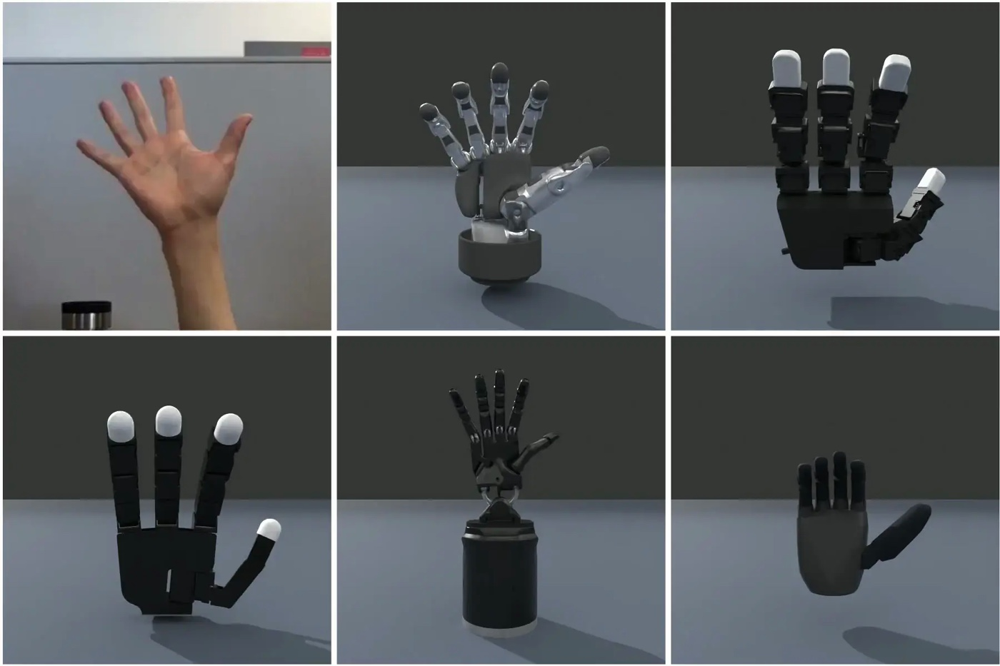
dex-retargeting1.3k★
把人体手部动作映射到多种机器人灵巧手的重定向库，AnyTeleop 的核心组件。
dexsuite · MIT · Python
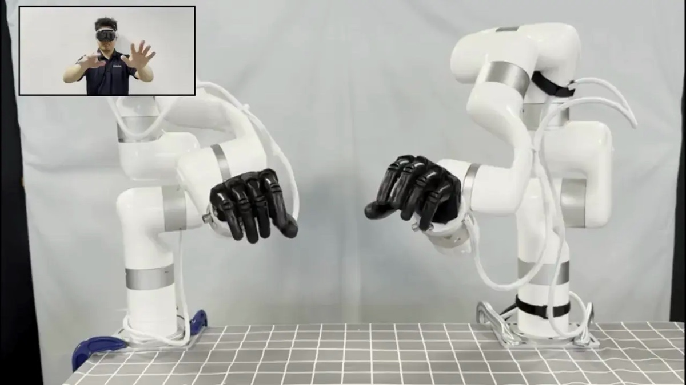
Bunny-VisionPro359★
用 Vision Pro 手部跟踪驱动双臂灵巧操作，含实时重定向与安全限位。
Dingry · MIT · Python
xr_teleoperate1.7k★
宇树官方的人形 XR 遥操作仓库，含头手跟踪、图像回传与关节映射。
Unitree · Apache-2.0 · Python
数据
11数据集、格式与可视化数据集先问规模与许可，再问覆盖了哪些本体。
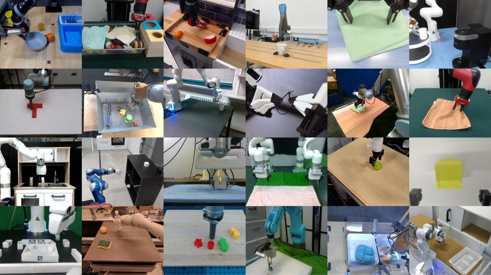
Open X-Embodiment2.1k★
跨机器人、跨任务的大规模真实数据集合与工具。
Google DeepMind · Apache-2.0（以仓库为准） · Python
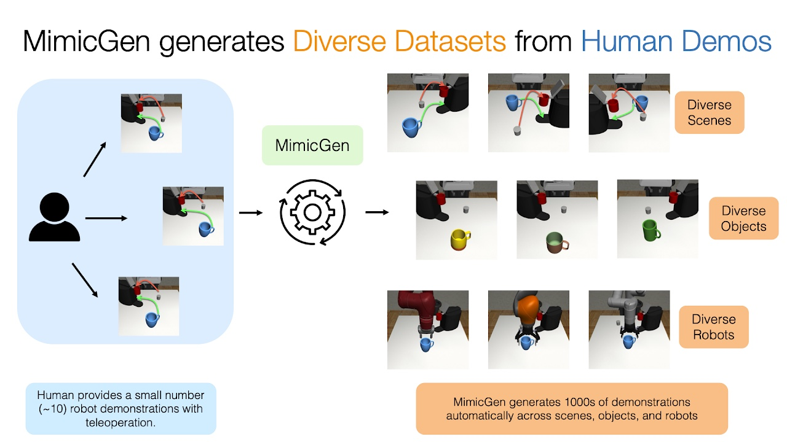
MimicGen670★
从少量人类演示生成大规模机器人操作数据。
NVIDIA · NVIDIA 许可（以仓库为准） · Python
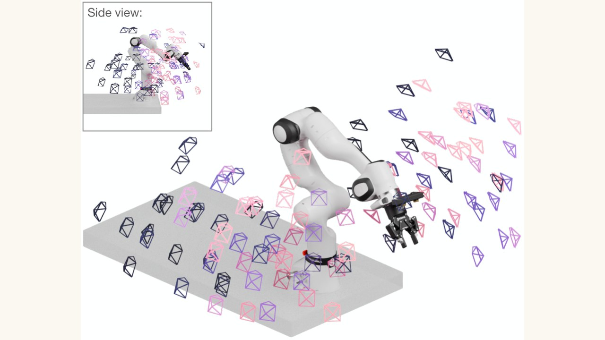
DROID473★
跨 564 个场景采的 76k 条真机操作演示，覆盖 86 个任务与多地采集者。
Stanford / TRI / UC Berkeley 等 · 仓库未附许可，数据使用以其页面条款为准 · Python
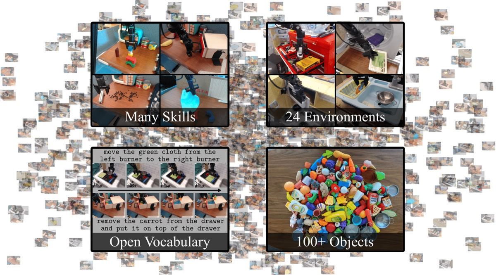
BridgeData V2295★
60,096 条带语言标注的真机轨迹，覆盖 24 个环境与 13 类技能。
UC Berkeley RAIL · CC BY 4.0 · Python
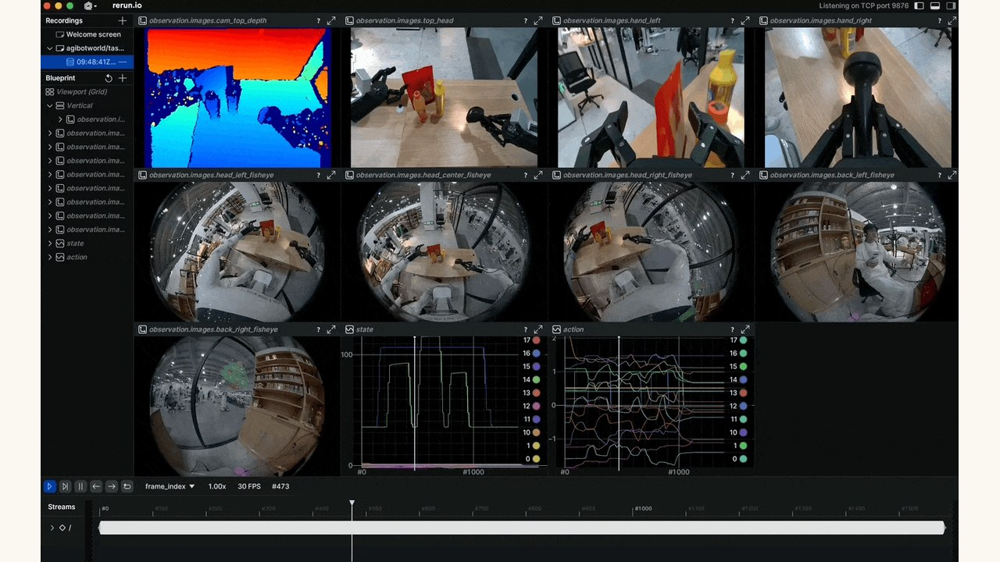
AgiBot World3.2k★
智元开源的百万级真机操作数据集，覆盖 217 个任务与 5 类场景。
AgiBot / OpenDriveLab · 仓库未附许可，数据许可见数据集页 · Python
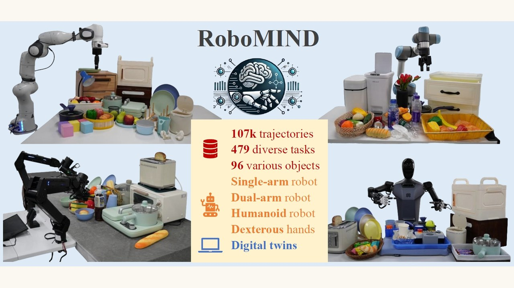
RoboMIND—
107k 条真机轨迹，覆盖 4 种本体、479 个任务与 96 类物体。
北京人形机器人创新中心 等 · 页面未列许可 · Python
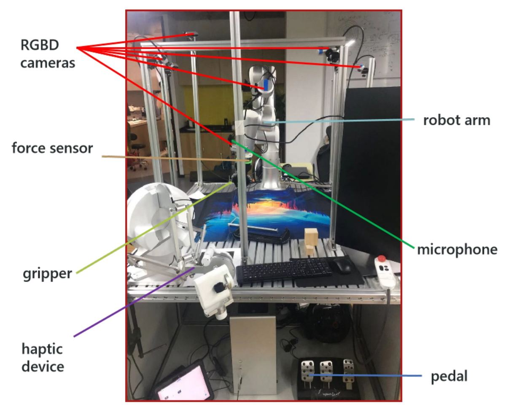
RH20T117★
11 万条接触密集操作序列，带视觉、力、音频、动作与对应人类演示。
上海交通大学 等 · CC BY-SA 4.0（RH20T-C）/ CC BY-NC 4.0（RH20T-NC） · Python
Ego4D664★
3,670 小时第一视角日常视频，覆盖 74 个地点与 9 个国家。
Meta AI 等 13 家机构 · 需签署许可协议 · Python
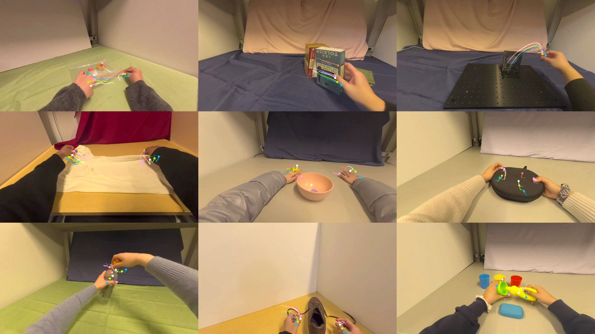
EgoDex411★
829 小时第一视角桌面操作视频，带手部与头身 3D 位姿标注。
Apple · Apple 自定义许可（见仓库 LICENSE） · Python
RLDS492★
机器人数据的统一格式与转换工具，Open X-Embodiment 的底层标准。
Google Research · Apache-2.0 · Python
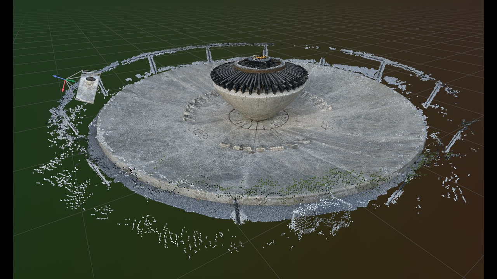
rerun11.8k★
把图像、点云、轨迹与张量按时间轴记录并可视化的工具，支持训练时流式查看。
Rerun · Apache-2.0 · Rust / Python
仿真
16物理引擎与场景资产真机之外另开一场，可并行训练，也可复现失败。
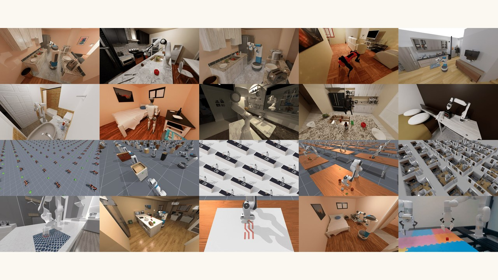
ManiSkill3.5k★
GPU 并行机器人操作仿真，适合大规模 RL/模仿学习。
Haosu Lab · Apache-2.0 · Python
MuJoCo17.8k★
物理仿真引擎，机器人控制与 RL 的通用底座。
Google DeepMind · Apache-2.0 · C / Python
Isaac Lab8.6k★
基于 Isaac Sim 的 GPU 机器人学习框架，适合大规模并行训练。
NVIDIA · BSD-3-Clause（以仓库为准） · Python
Habitat-Lab3.2k★
室内导航与具身 AI 仿真平台，含 Habitat 3.0 人机协作。
Meta AI · MIT（以仓库为准） · Python
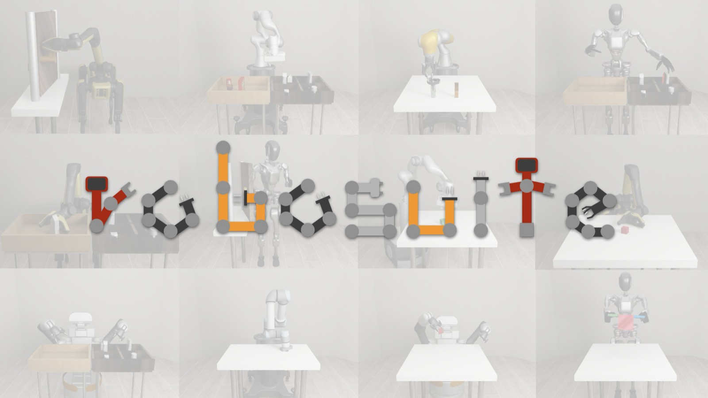
robosuite2.7k★
模块化机械臂仿真，兼容 MuJoCo，适合操作研究。
ARISE Initiative · MIT（LICENSE 原文为 MIT，GitHub 分类为 Other） · Python
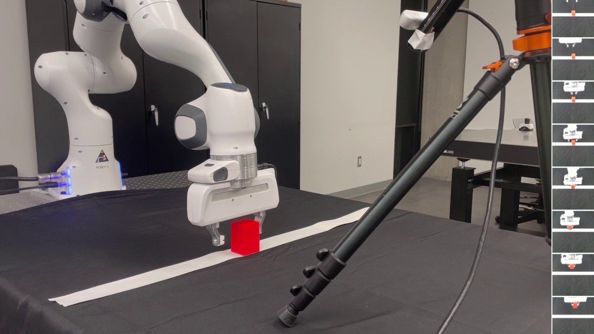
MuJoCo Playground2.3k★
在 MJX 上跑的并行机器人环境集合，含训练脚本与真机部署示例。
Google DeepMind · Apache-2.0 · Python
MuJoCo Menagerie4.4k★
整理过的机器人 MJCF 模型集合，含执行器参数与场景示例。
Google DeepMind · 各模型分别声明（见仓库 LICENSE） · Python
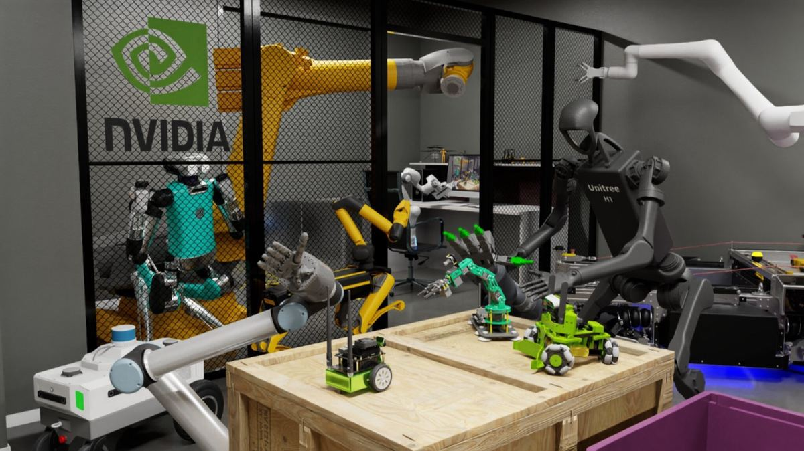
Isaac Sim4.5k★
基于 Omniverse 的机器人仿真应用，提供物理、渲染与合成数据。
NVIDIA · Apache-2.0（仓库本体）；依赖组件另有许可 · Python
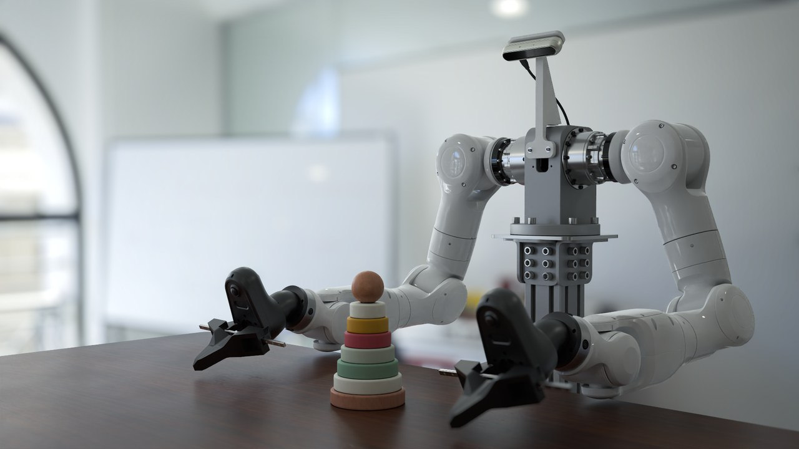
Genesis30.2k★
通用机器人仿真平台，覆盖刚体、柔体与可微物理，附大量示例场景。
Genesis Embodied AI · Apache-2.0 · Python
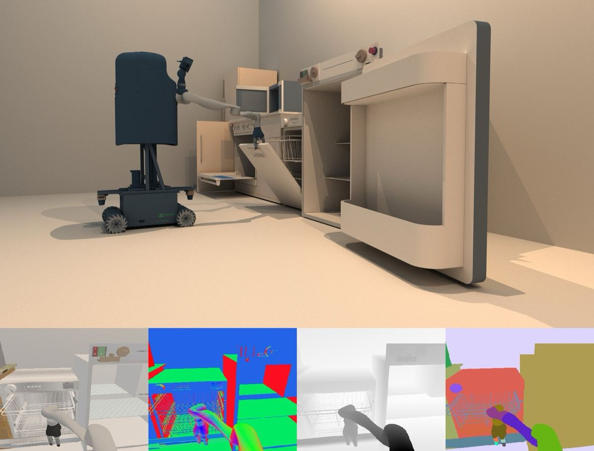
SAPIEN873★
面向关节物体的物理仿真引擎，支持刚体、柔体与光线追踪渲染。
Hillbot / UCSD · Apache-2.0 · C++ / Python
PyBullet14.9k★
实时碰撞检测与刚体仿真库，Python 绑定即 PyBullet。
Bullet Physics · zlib（Extras 与第三方目录除外） · C++ / Python
Drake4.3k★
MIT 的基于模型设计与验证工具，含多体动力学、优化与仿真。
Robot Locomotion Group / MIT · BSD-3-Clause · C++ / Python
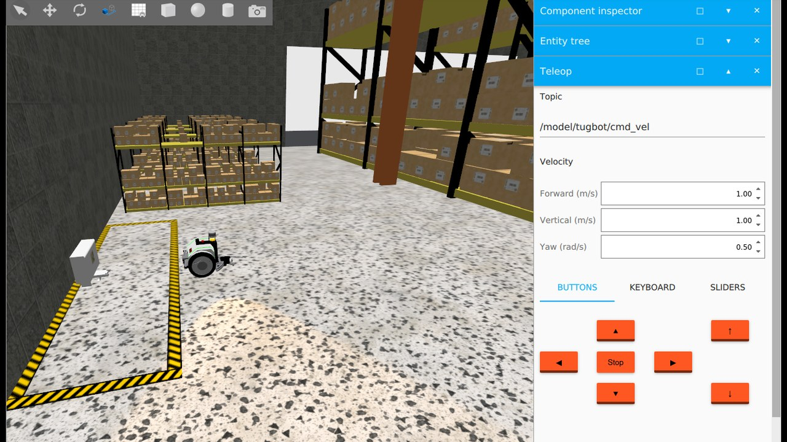
Gazebo1.6k★
开源机器人仿真器，与 ROS 2 的桥接和传感器插件配套。
Open Robotics / Gazebo 社区 · Apache-2.0 · C++
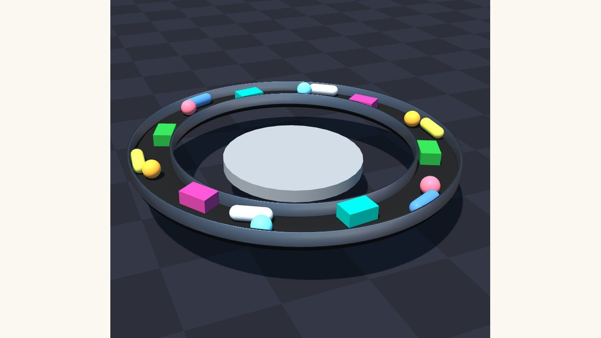
Newton6.0k★
基于 NVIDIA Warp 的 GPU 物理引擎，由 Disney、DeepMind 与 NVIDIA 发起。
Newton Physics（Linux Foundation 项目） · Apache-2.0（代码）/ CC BY 4.0（文档） · Python
mjlab3.4k★
把 Isaac Lab 的 manager-based API 搬到 MuJoCo Warp，跑 GPU 并行强化学习。
MuJoCo Lab · Apache-2.0 · Python
robot_lab2.0k★
基于 Isaac Lab 的机器人强化学习扩展库，收了一批四足与人形的训练配置。
fan-ziqi · Apache-2.0 · Python
中间件与控制
8通信、规划、动力学与实时下发策略出的动作，按控制频率稳稳送到关节。
ROS 26.3k★
分布式机器人中间件，提供节点通信、参数、录包与工具链。
Open Robotics / ROS 2 社区 · 元仓库无统一许可，各包分别声明 · C++ / Python
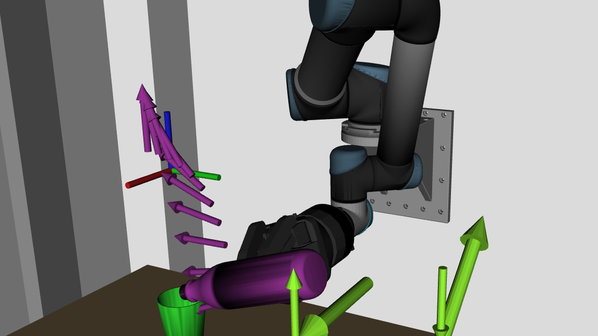
MoveIt 22.1k★
ROS 2 的运动规划框架，含碰撞检测、规划管线与执行接口。
MoveIt / PickNik · BSD-3-Clause · C++
ros2_control1.1k★
ROS 2 的硬件抽象与控制循环框架，统一关节接口与控制器切换。
ROS Controls · Apache-2.0 · C++
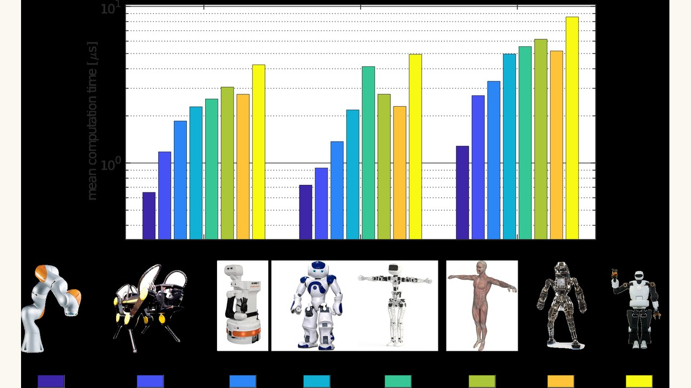
Pinocchio3.9k★
刚体动力学与解析导数库，机器人控制与优化的常用底层。
Inria / LAAS-CNRS · BSD-2-Clause · C++ / Python
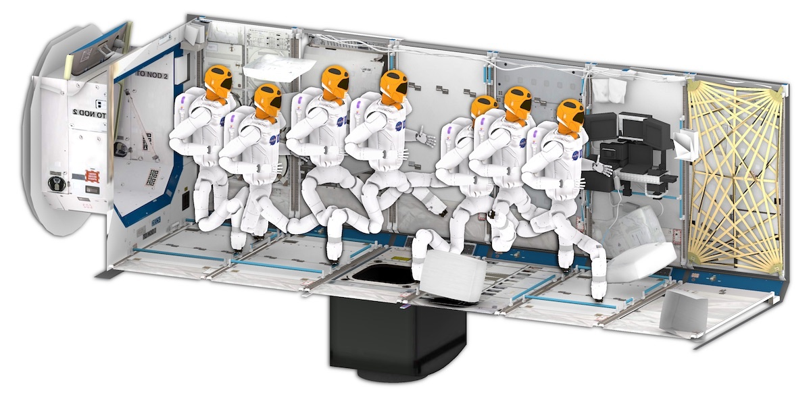
OMPL2.2k★
采样类运动规划算法库，RRT、PRM 等实现的通用底座。
Rice University Kavraki Lab · BSD-3-Clause · C++
cuRobo2.0k★
GPU 并行的运动生成库，含碰撞检测、IK 与轨迹优化。
NVIDIA · Apache-2.0 · Python / CUDA
OCS21.5k★
面向切换系统的 MPC 工具箱，含全身控制与轨迹优化示例。
ETH Zurich Legged Robotics · BSD-3-Clause · C++
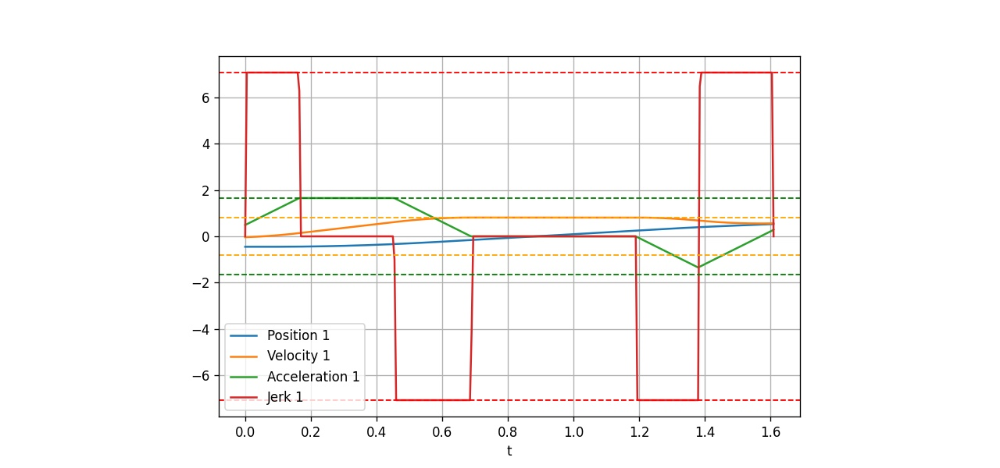
Ruckig1.4k★
加加速度受限的在线轨迹生成库，逐周期给出时间最短轨迹。
pantor · MIT · C++ / Python
算法与模型
16模仿学习、VLA 与扩散策略自模仿学习至 VLA、世界模型，化感知与指令为动作。
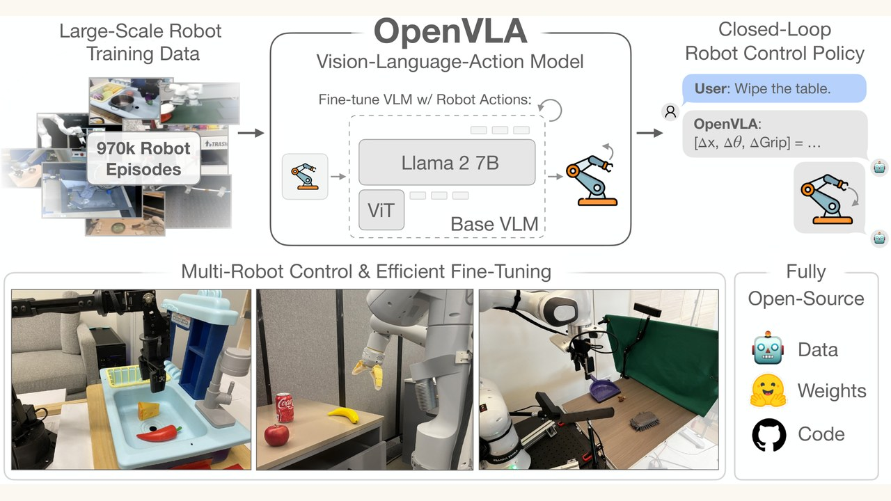
OpenVLA7.3k★
OpenVLA 开源 7.5B 视觉-语言-动作模型，含权重。
OpenVLA Team · MIT · Python
OpenPI / π014.6k★
π0 / π0.5 的官方开源实现与训练/推理脚本。
Physical Intelligence · Apache-2.0（以仓库为准） · Python
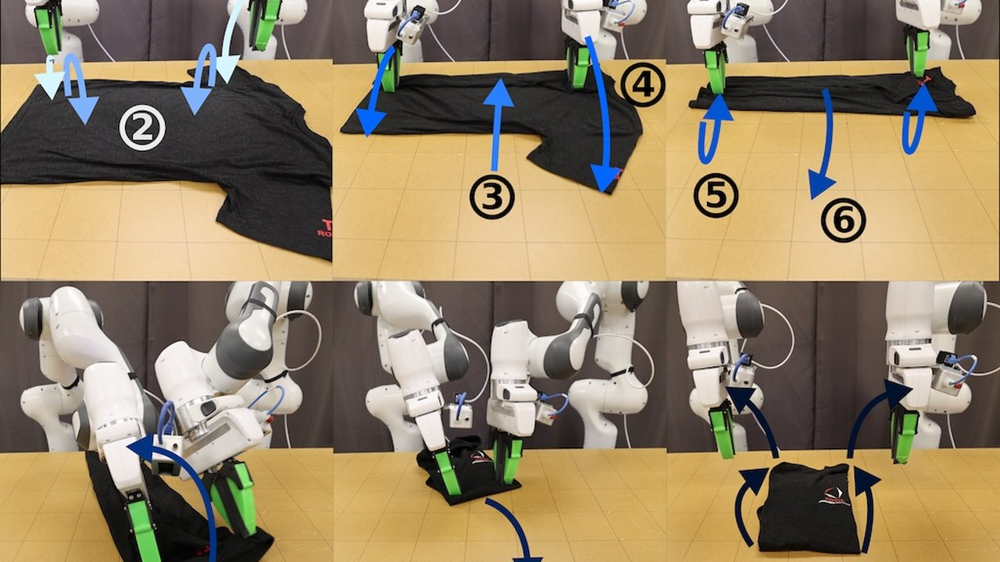
Diffusion Policy4.7k★
扩散策略的官方实现，覆盖 Pusht、Robomimic 与真机示例。
Stanford REAL · MIT（以仓库为准） · Python
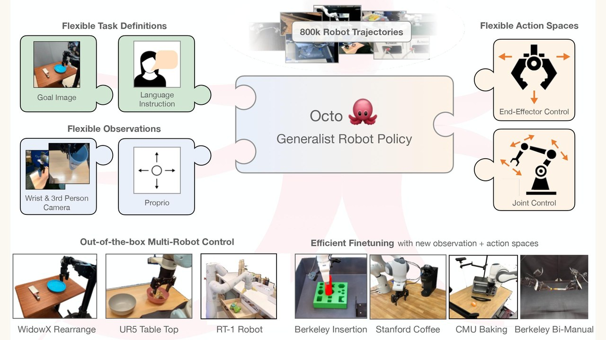
Octo1.8k★
Octo 以 27M/93M 小模型在 80 万条轨迹上做通用策略。
Octo Team · MIT · Python
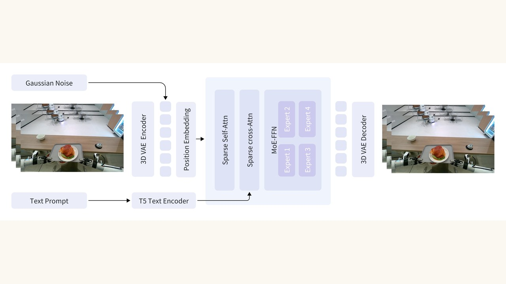
GigaWorld-01.6k★
面向 VLA 训练的世界模型与数据生成工具。
GigaAI · Apache-2.0（以仓库为准） · Python
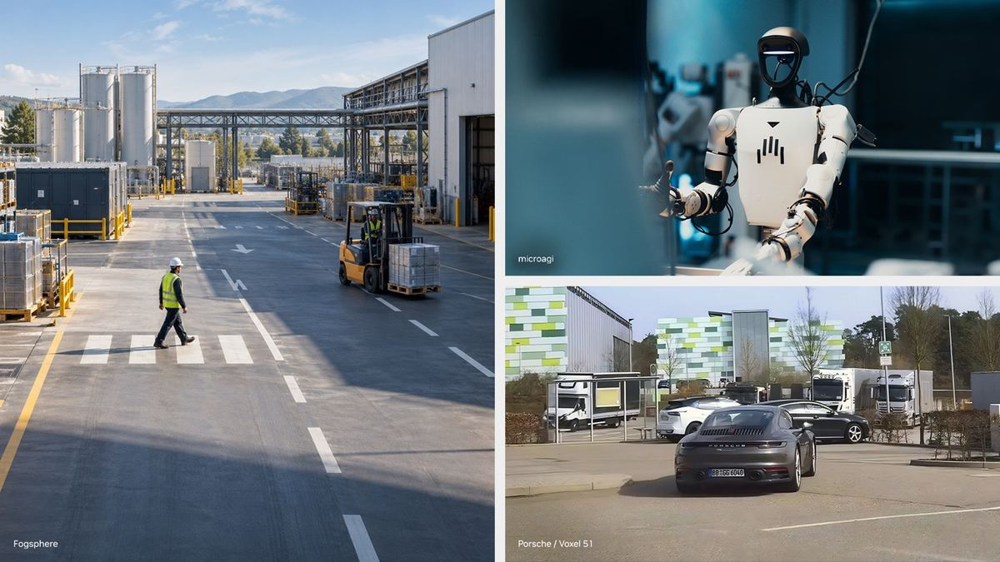
Cosmos12.4k★
物理 AI 世界基础模型与视频生成工具链。
NVIDIA · OpenMDW-1.1（Open Model Development Worldwide License） · Python
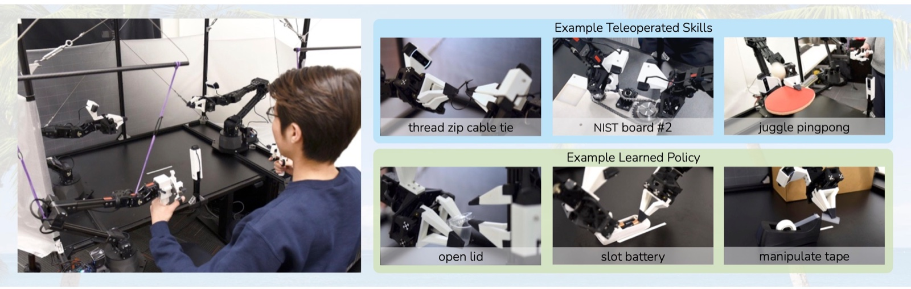
ACT2.3k★
低成本双臂遥操作采集，Transformer 一次预测一段动作。
Tony Zhao / Stanford · MIT · Python
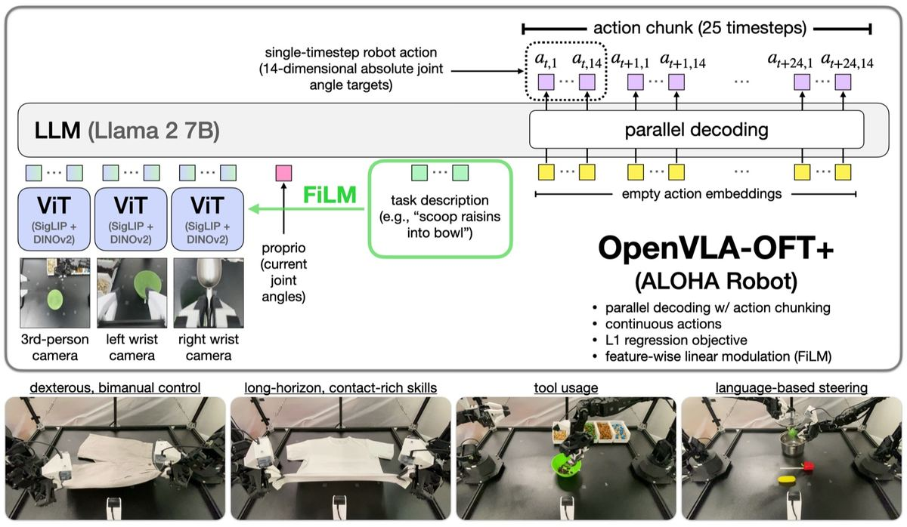
OpenVLA-OFT1.4k★
OpenVLA 的微调改进版，用并行解码与动作分块提高推理速度与成功率。
Moo Jin Kim / Stanford · MIT · Python
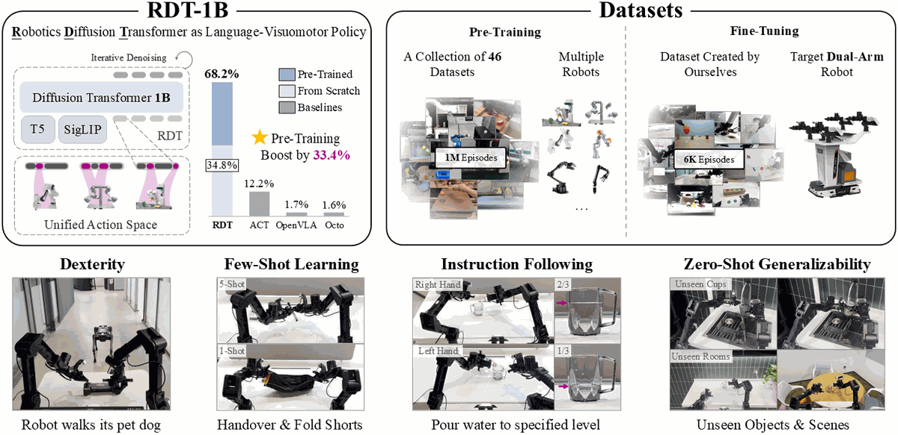
RDT-1B1.8k★
清华开源的 1B 双臂扩散 Transformer，用统一动作向量做多本体微调。
清华 TSAIL · MIT · Python
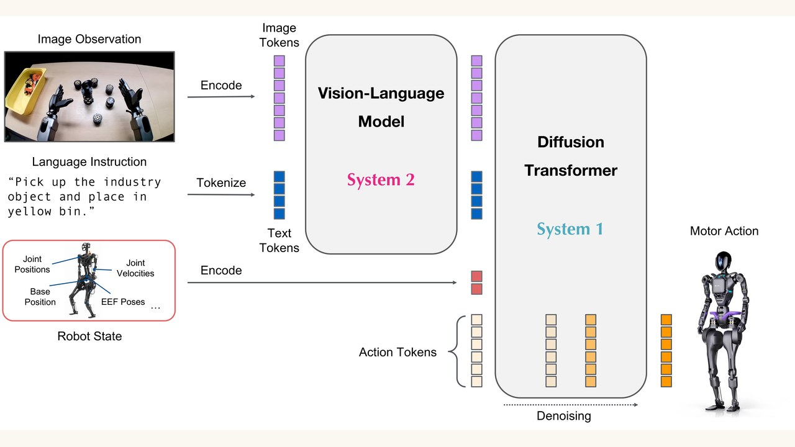
GR00T N1.x8.4k★
NVIDIA 的人形机器人基础模型，附数据格式、微调与部署脚本。
NVIDIA · Apache-2.0（代码）；权重另有许可 · Python
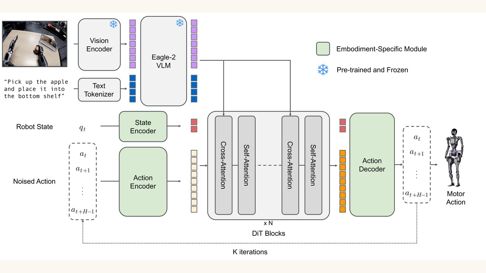
SmolVLA28.9k★
SmolVLA 用 450M 参数在消费级显卡上做 VLA。
Hugging Face · Apache-2.0 · Python
CogACT435★
CogACT 把认知 VLM 与扩散动作专家解耦组合。
Microsoft · 未声明 · Python
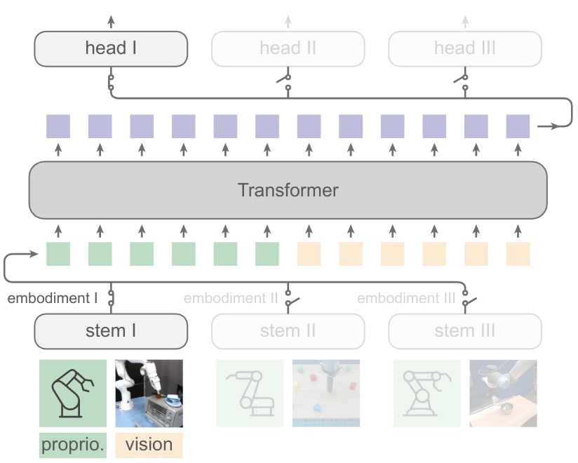
HPT547★
HPT 用异构预训练 Transformer 统一多本体策略表示。
Lirui Wang / MIT · MIT · Python
3D Diffusion Policy1.5k★
用稀疏点云替掉 RGB，扩散策略的泛化明显变好。
Yanjie Ze / 上海交大 · MIT · Python
SpatialVLA735★
在动作表示里加入空间信息的 VLA，作者称用 110 万条真机片段训练。
SpatialVLA Team · 仓库未附许可 · Python
StarVLA3.9k★
把 VLA 拆成可替换模块的代码库，骨干、动作头与训练流程分开配置。
StarVLA Team · MIT · Python
训练
8并行环境与训练框架并行环境、算法实现与实验管理，关乎一轮迭代的快慢。
LeRobot28.9k★
把机器人学习做成可复现的工程栈：数据集、策略、训练与真机部署。
Hugging Face · Apache-2.0 · Python
robomimic1.6k★
从演示学习的训练框架，含离线数据集、算法实现与评测脚本。
ARISE Initiative / Stanford · MIT · Python
rsl_rl3.1k★
ETH 腿足实验室的轻量强化学习库，PPO 实现常配 Isaac Lab 使用。
ETH Zurich Legged Robotics · BSD-3-Clause · Python
skrl1.1k★
模块化强化学习库，支持 PyTorch、JAX 与 Warp 后端并接多种仿真器。
Toni-SM · MIT · Python
Brax3.3k★
在加速器上跑并行刚体仿真与强化学习的库，基于 JAX。
Google · Apache-2.0 · Python / JAX
rl_games1.4k★
面向 Isaac Gym 系列环境的强化学习实现，含 PPO 等常用算法。
Denys88 · MIT · Python
legged_gym3.2k★
腿足机器人的训练环境集合，含地形、奖励与课程设置。
ETH Zurich Legged Robotics · BSD-3-Clause · Python
Stable-Baselines314.0k★
PyTorch 实现的强化学习算法库，接口统一、文档完整。
DLR-RM · MIT · Python
部署
8推理优化与边缘执行推理压到多快、放在哪块板子上，策略才能在机上实时跑。
TensorRT13.5k★
NVIDIA 的 GPU 推理优化 SDK，负责量化、图层融合与内核选择。
NVIDIA · Apache-2.0（仓库开源部分） · C++ / Python
ONNX Runtime22.3k★
跨平台推理引擎，支持 CPU、GPU 与多种加速器的执行提供器。
Microsoft · MIT · C++ / Python
jetson-containers4.9k★
为 Jetson 预构建的容器集合，省去在板子上编译深度学习栈的时间。
dusty-nv · MIT · Python / Shell
Isaac ROS324★
NVIDIA 的 ROS 2 加速包集合，把视觉与感知模块跑在 GPU 上。
NVIDIA · NVIDIA Isaac ROS 许可（自定义） · C++
Triton Inference Server11.1k★
多框架推理服务框架，支持动态批处理与多模型并行。
NVIDIA · BSD-3-Clause · C++ / Python
Real-Time Chunking635★
解决动作分块流策略推理延迟问题的执行方法，附仿真实验代码。
Physical Intelligence · MIT · Python
Torch-TensorRT3.0k★
把 PyTorch 模型编译成 TensorRT 引擎的官方接口，省去手写导出。
PyTorch · BSD-3-Clause · Python
ExecuTorch5.2k★
PyTorch 的端侧推理运行时，把模型导出后在手机与嵌入式设备上跑。
Meta / PyTorch · BSD-3-Clause · C++ / Python
评测
13基准、环境与榜单同一协议之下方可相比；离了协议，分数无从谈起。
RLinf 评测指南5.6k★
RLinf 的 Benchmark 与真机评测文档，含 BEHAVIOR-1K、LIBERO 等评测协议。
RLinf · 中文
RoboTwin 2.03.1k★
双臂操作仿真与 50 任务 benchmark，含数据生成与评测。
RoboTwin Team · MIT（以仓库为准） · Python
RoboCasa1.9k★
大规模厨房/桌面操作仿真与 GR1 TableTop 任务。
RoboCasa Team · MIT（LICENSE 原文为 MIT，GitHub 分类为 Other） · Python
LIBERO2.5k★
长时序语言条件操作 benchmark，VLA 论文常用。
Lifelong Robot Learning · MIT（以仓库为准） · Python
RLBench1.8k★
18 任务机械臂操作仿真，适合研究多任务策略。
Stephens et al. · Imperial College London 自定义研究许可（BSD 组件除外） · Python
SimplerEnv1.2k★
在仿真里复现真机操作策略评测的设置，覆盖 RT、Octo 等模型的常见配置。
SimplerEnv Team · MIT · Python
CALVIN1.0k★
长时序语言条件操作的 benchmark，常用 ABCD→D 训练与评测设置。
University of Freiburg · MIT · Python
BEHAVIOR-1K1.8k★
1,000 项家务活动的仿真 benchmark，场景含 50 个可交互房间与万余物体。
Stanford Vision and Learning Lab · MIT · Python
RoboArena116★
用分布式真机成对比较给通用策略排名的评测框架。
RoboArena Team · MIT · Python
 VLABench481★
VLABench481★
100 类语言条件操作任务的评测集，物品 2,000 件以上，含长时序推理。
OpenMOSS / 上海 AI Lab · MIT · Python
RoboColosseum161★
评测操作策略泛化能力的 benchmark，分指令、空间与鲁棒性等维度。
Robot Colosseum Team · 仓库未附许可 · Python
Genie Sim1.6k★
智元开源的仿真平台，含场景重建、数据采集与评测工具。
AgiBot · MPL-2.0（geniesim 与 data_collection 目录） · Python
RoboChallenge158★
真机策略评测平台的推理示例仓库，配套 Table 30 任务集。
RoboChallenge · CC BY-NC-SA 4.0 · Python
学习与课程
11教材与课程补运动学、控制、强化学习与操作的底子。
VLA-Handbook770★
工程实战导向的 VLA 知识库：理论、部署、公司实录题库、社区踩坑。
sou350121 · CC BY 4.0 · 中文
Embodied-AI-Guide17k★
GitHub 17k 星的中文具身智能百科，附一周动手入门教程。
TianxingChen / Lumina · 非商用 · 中文
Robotics_Notebooks768★
人形机器人技术栈知识图谱与纵深路线。
ImChong · MIT · 中文
embodied-interview-qa331★
公开面经选题的具身面试题库；频次分层与手撕题。
WinstonJQ · MIT · 中文
humanoid-motion-intelligence0★
人形运动智能的论文、项目、产业与求职知识库，内置供 AI 助手检索的说明文件。
flyingGH · CC BY-NC-SA 4.0（原创内容）+ MIT（校验脚本），分层许可 · 中文
Modern Robotics3.1k★
Lynch 与 Park 的机器人学教材配套代码库，覆盖运动学、动力学与规划。
Kevin Lynch / Frank Park（西北大学） · MIT（代码库） · Python / MATLAB
Underactuated Robotics1.0k★
MIT 欠驱动机器人课程讲义，从动力学讲到控制与学习控制。
Russ Tedrake（MIT） · BSD-3-Clause · Python / HTML
Robotic Manipulation682★
MIT 操作课程讲义，从几何感知讲到抓取、规划与学习控制。
Russ Tedrake（MIT） · BSD-3-Clause · Python / HTML
Easy-RL14.9k★
中文强化学习教程，从基础概念讲到深度强化学习算法与实现。
Datawhale · CC BY-NC-SA 4.0 · 中文
Hands-on-RL5.1k★
中文强化学习课程，按算法逐个给推导、代码与实验设置。
boyu-ai · Apache-2.0 · 中文 / Python
Spinning Up12.0k★
OpenAI 的深度强化学习入门教材，含算法推导、代码与实验指南。
OpenAI · MIT · Python / 英文